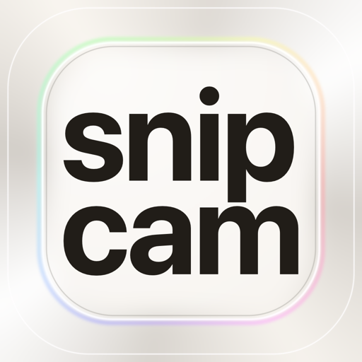
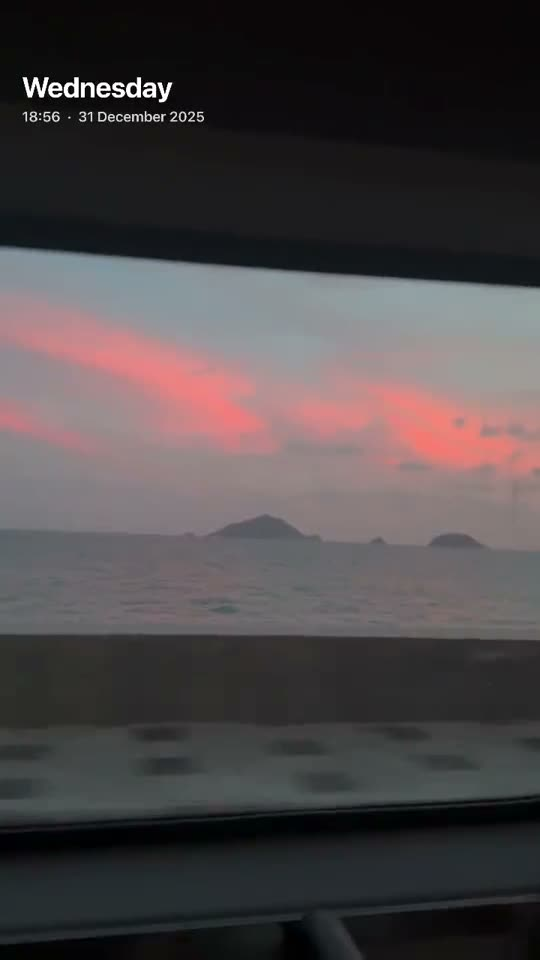
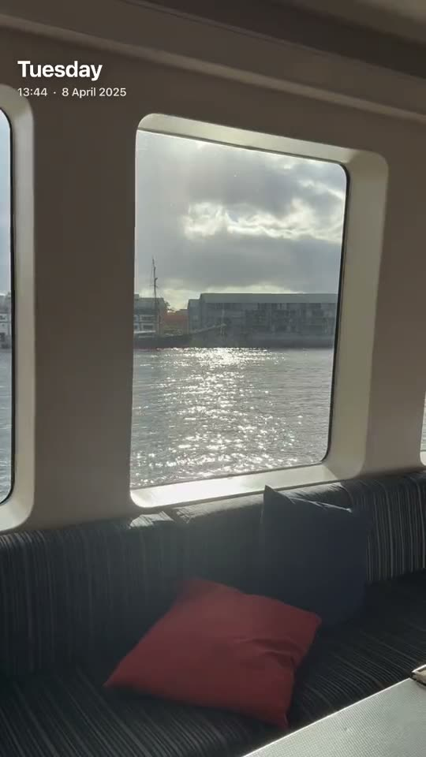
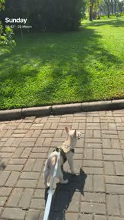
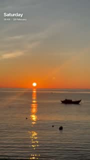
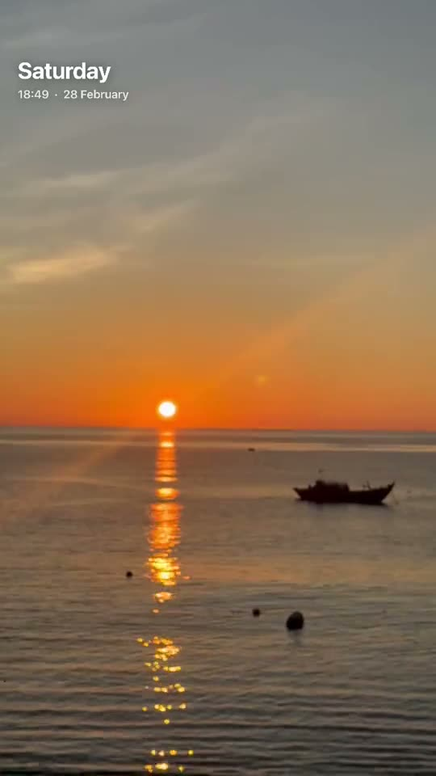

2 or 3 seconds.
That's enough.
A camera for the small but memorable moments.
Join the TestFlight betaFor iPhone · Free beta through Apple's TestFlight app
Inside snipcam
09:41
2s3s
Hold to keep a moment.
09:41
Gallery
Day Stacks
Calendar
Thursday1 snip
Wednesday1 snip
Life Feed10 snips
Favourites3 snips
Your Stacks




＋ New

Revisit your days and stacks.
09:41
Aa
Play a stack back, snip by snip.